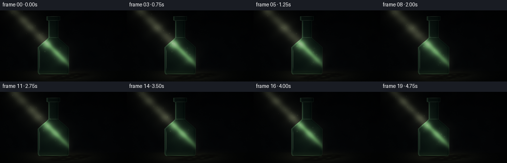
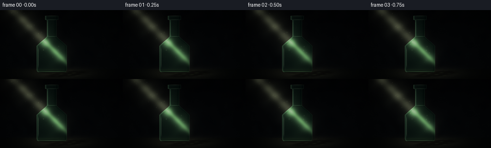
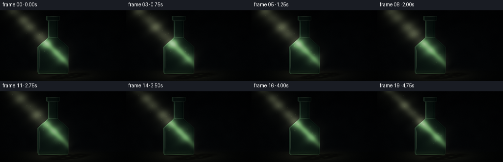
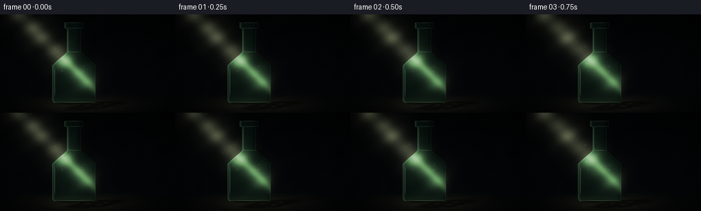

CODING AGENTS AS PIXEL WORLD MODELS
traex/DeepSeek-V4.1-Flash · phygen_043
点击播放 · 原生 RGB 像素
逐轮保存的候选
回放视频、检查图与代码变化。
每份候选均可单独播放。实际图片检查记录在下方工具轨迹中。
候选 01播放与检查图
点击播放 · 原生 RGB 像素


展开代码变化
--- 上一保存版本
+++ 本次保存版本
@@ -0,0 +1,287 @@
+"""Procedurally render a dark, cinematic glass-bottle still life.
+
+The scene is drawn at 4x the delivery resolution and then resampled. All
+motion comes from the light, suspended dust, and the bottle's refracted
+highlights; the bottle itself remains still.
+"""
+
+from pathlib import Path
+
+import numpy as np
+from PIL import Image
+from scipy.ndimage import gaussian_filter
+
+import artifact_io
+
+
+ROOT = Path(__file__).resolve().parent
+WIDTH = 256
+HEIGHT = 144
+FRAMES = 20
+FPS = 4
+SCALE = 4
+W = WIDTH * SCALE
+H = HEIGHT * SCALE
+
+
+def smoothstep(a, b, value):
+ t = np.clip((value - a) / (b - a), 0.0, 1.0)
+ return t * t * (3.0 - 2.0 * t)
+
+
+def gaussian(value, width):
+ return np.exp(-((value / width) ** 2))
+
+
+def make_noise(seed, height, width):
+ rng = np.random.default_rng(seed)
+ coarse = rng.normal(0.0, 1.0, (max(2, height // 18), max(2, width // 18)))
+ coarse = gaussian_filter(coarse, 1.2, mode="reflect")
+ coarse = (coarse - coarse.min()) / (coarse.max() - coarse.min() + 1e-6)
+ return np.asarray(
+ Image.fromarray((coarse * 255).astype(np.uint8)).resize(
+ (width, height), Image.Resampling.BICUBIC
+ ),
+ dtype=np.float32,
+ ) / 255.0
+
+
+def build_scene_geometry():
+ x = np.arange(W, dtype=np.float32)[None, :]
+ y = np.arange(H, dtype=np.float32)[:, None]
+ xx = np.broadcast_to(x, (H, W))
+ yy = np.broadcast_to(y, (H, W))
+
+ cx = 431.0
+ bottle_top = 47.0
+ bottle_bottom = 519.0
+
+ # The width profile gives the bottle a narrow neck, sloping shoulders,
+ # a generous body, and a lightly rounded base.
+ knot_y = np.array(
+ [43, 46, 49, 80, 84, 220, 236, 266, 299, 497, 510, 519, 521],
+ dtype=np.float32,
+ )
+ knot_w = np.array(
+ [48, 53, 55, 55, 40, 40, 55, 91, 126, 126, 123, 113, 106],
+ dtype=np.float32,
+ )
+ half_width = np.interp(np.arange(H, dtype=np.float32), knot_y, knot_w)
+ half_width_2d = np.broadcast_to(half_width[:, None], (H, W))
+
+ vertical = smoothstep(bottle_top, bottle_top + 1.8, yy) * (
+ 1.0 - smoothstep(bottle_bottom - 2.0, bottle_bottom + 1.0, yy)
+ )
+ horizontal = 1.0 / (1.0 + np.exp((np.abs(xx - cx) - half_width_2d) / 0.9))
+ bottle = np.clip(horizontal * vertical, 0.0, 1.0)
+ return xx, yy, cx, bottle_top, bottle_bottom, half_width_2d, vertical, bottle
+
+
+def render_frame(frame_index):
+ t = frame_index / FRAMES
+ phase = 2.0 * np.pi * t
+ (
+ xx,
+ yy,
+ cx,
+ bottle_top,
+ bottle_bottom,
+ half_width,
+ vertical,
+ bottle,
+ ) = build_scene_geometry()
+ row = np.arange(H, dtype=np.int32)[:, None]
+
+ # Quiet charcoal background with a barely visible table edge.
+ yn = yy / H
+ wall = np.empty((H, W, 3), dtype=np.float32)
+ wall[..., 0] = 1.7 + 2.1 * yn
+ wall[..., 1] = 2.5 + 3.1 * yn
+ wall[..., 2] = 3.3 + 3.8 * yn
+
+ texture = make_noise(17, H, W)
+ wall += (texture[..., None] - 0.5) * np.array([2.2, 2.7, 2.4], np.float32)
+
+ floor_amount = smoothstep(486.0, 495.0, yy)
+ floor_tint = np.array([3.0, 4.6, 4.4], np.float32)
+ wall = wall * (1.0 - floor_amount[..., None]) + floor_tint * floor_amount[..., None]
+
+ # A broad pool of light on the tabletop makes the cast shadow legible.
+ table_pool = gaussian((xx - 503.0) / 255.0, 1.0) * gaussian(
+ (yy - 529.0) / 47.0, 1.0
+ )
+ wall += table_pool[..., None] * np.array([22.0, 21.0, 15.0], np.float32)
+
+ # The incoming shaft is a long diagonal beam ending just beyond the bottle.
+ p0 = np.array([34.0, -74.0], dtype=np.float32)
+ p1 = np.array([455.0, 347.0], dtype=np.float32)
+ direction = p1 - p0
+ direction /= np.linalg.norm(direction)
+ normal = np.array([-direction[1], direction[0]], dtype=np.float32)
+ rel_x = xx - p0[0]
+ rel_y = yy - p0[1]
+ along = rel_x * direction[0] + rel_y * direction[1]
+ across = rel_x * normal[0] + rel_y * normal[1]
+
+ beam_width = 35.0 + 4.0 * np.sin(phase * 0.7)
+ beam_halo = gaussian(across, 103.0)
+ beam_core = gaussian(across, beam_width)
+ beam_fade = smoothstep(-35.0, 105.0, along) * (
+ 1.0 - smoothstep(600.0, 790.0, along)
+ )
+ striation = 0.84 + 0.16 * np.sin(along * 0.031 - phase * 0.9)
+ striation *= 0.92 + 0.08 * np.sin(along * 0.067 + across * 0.014)
+ beam = (0.23 * beam_halo + 0.77 * beam_core) * beam_fade * striation
+ beam *= 0.96 + 0.04 * np.sin(phase + 0.4)
+ beam_rgb = np.array([84.0, 88.0, 66.0], dtype=np.float32)
+ wall += beam[..., None] * beam_rgb
+
+ # A secondary, very soft glow around the lit tabletop.
+ table_beam = beam_fade * gaussian(across - 95.0, 170.0) * floor_amount
+ wall += table_beam[..., None] * np.array([8.0, 8.0, 5.0], np.float32)
+
+ # Cast shadow: a soft, perspective-stretched bottle silhouette on the table.
+ angle = -0.10
+ ca, sa = np.cos(angle), np.sin(angle)
+ sx = (xx - 559.0) * ca + (yy - 534.0) * sa
+ sy = -(xx - 559.0) * sa + (yy - 534.0) * ca
+ shadow_ellipse = np.sqrt((sx / 202.0) ** 2 + (sy / 25.0) ** 2)
+ shadow = (1.0 - smoothstep(0.62, 1.08, shadow_ellipse)) * floor_amount
+ contact = np.sqrt(((xx - cx) / 137.0) ** 2 + ((yy - 518.0) / 16.0) ** 2)
+ shadow = np.maximum(shadow, (1.0 - smoothstep(0.45, 1.0, contact)) * floor_amount)
+ wall *= (1.0 - 0.50 * shadow[..., None]).clip(0.35, 1.0)
+
+ # The transparent bottle focuses a little light into moving floor caustics.
+ caustic_region = (
+ gaussian((xx - 562.0) / 125.0, 1.0)
+ * gaussian((yy - 532.0) / 24.0, 1.0)
+ * floor_amount
+ )
+ caustic_wave = (
+ 0.56
+ + 0.25 * np.sin(xx * 0.075 + yy * 0.19 + phase * 1.1)
+ + 0.19 * np.sin(xx * 0.032 - yy * 0.31 - phase * 0.7)
+ )
+ caustic = caustic_region * np.clip(caustic_wave - 0.55, 0.0, 1.0) ** 1.7
+ wall += caustic[..., None] * np.array([48.0, 61.0, 35.0], np.float32)
+
+ # Refraction shifts the background laterally, most strongly at the rim.
+ radial = np.clip(np.abs(xx - cx) / np.maximum(half_width, 1.0), 0.0, 1.0)
+ shift_x = -15.0 * np.sign(xx - cx) * radial**3
+ sample_x = np.clip((xx + shift_x).astype(np.int32), 0, W - 1)
+ refracted = wall[row, sample_x]
+
+ glass = refracted * np.array([0.60, 0.82, 0.72], dtype=np.float32)
+ glass += np.array([1.5, 7.0, 5.0], dtype=np.float32)
+ glass += beam[..., None] * np.array([35.0, 51.0, 31.0], dtype=np.float32)
+
+ # Internal shading and the diagonal transmitted light.
+ inside_x = (xx - cx) / np.maximum(half_width, 1.0)
+ glass += (-inside_x[..., None] * 0.5 + 0.5) * np.array(
+ [4.0, 6.0, 5.0], dtype=np.float32
+ )
+ transmitted = gaussian(across + 4.0, 19.0) * gaussian(
+ (yy - 326.0) / 195.0, 1.0
+ )
+ glass += transmitted[..., None] * np.array([38.0, 57.0, 32.0], dtype=np.float32)
+
+ # Fine vertical edge light, stronger on the beam-facing side.
+ horizontal_distance = half_width - np.abs(xx - cx)
+ rim_edge = gaussian(horizontal_distance - 1.1, 1.45) * vertical
+ leftness = np.clip(0.50 - 0.50 * inside_x, 0.0, 1.0)
+ rim_strength = rim_edge * (0.20 + 0.80 * leftness)
+ glass += rim_strength[..., None] * np.array([63.0, 84.0, 58.0], dtype=np.float32)
+
+ inner_left = gaussian(np.abs(xx - cx) - (half_width - 7.0), 3.6) * (xx < cx)
+ glass += inner_left[..., None] * np.array([15.0, 25.0, 18.0], dtype=np.float32)
+ inner_right = gaussian(np.abs(xx - cx) - (half_width - 11.0), 5.0) * (xx > cx)
+ glass -= inner_right[..., None] * np.array([4.0, 4.0, 3.0], dtype=np.float32)
+
+ # Broad highlight on the shoulder where the shaft meets the glass.
+ shoulder_glow = gaussian((xx - 374.0) / 32.0, 1.0) * gaussian(
+ (yy - 272.0) / 43.0, 1.0
+ )
+ glass += shoulder_glow[..., None] * np.array([30.0, 44.0, 27.0], dtype=np.float32)
+
+ # Thick rim and base catch sharper, cooler reflections.
+ lip_band = gaussian(yy - 48.0, 1.5) + 0.55 * gaussian(yy - 80.5, 1.3)
+ lip_profile = gaussian(xx - cx, 51.0) * (np.abs(xx - cx) < 57.0)
+ lip_light = lip_band * lip_profile
+ glass += lip_light[..., None] * np.array([76.0, 89.0, 70.0], dtype=np.float32)
+
+ neck_ring = gaussian(yy - 220.0, 2.0) * gaussian(xx - cx, 42.0)
+ glass += neck_ring[..., None] * np.array([31.0, 43.0, 31.0], dtype=np.float32)
+
+ base_glow = gaussian(yy - 513.5, 2.6) * gaussian(xx - cx, 126.0)
+ glass += base_glow[..., None] * np.array([47.0, 61.0, 40.0], dtype=np.float32)
+
+ # Narrow white specular lines keep the transparent object readable.
+ spec_left = gaussian(xx - (cx - 112.0), 2.0) * smoothstep(
+ 305.0, 338.0, yy
+ ) * (1.0 - smoothstep(452.0, 495.0, yy))
+ spec_left += 0.55 * gaussian(xx - (cx - 35.5), 1.4) * smoothstep(
+ 89.0, 112.0, yy
+ ) * (1.0 - smoothstep(207.0, 222.0, yy))
+ glass += spec_left[..., None] * np.array([49.0, 57.0, 43.0], np.float32)
+
+ image = wall * (1.0 - bottle[..., None]) + glass * bottle[..., None]
+
+ # Fine dust motes are brighter where they cross the beam.
+ rng = np.random.default_rng(803)
+ motes = 34
+ mote_s = rng.uniform(60.0, 670.0, motes)
+ mote_q = rng.uniform(-57.0, 57.0, motes)
+ mote_phase = rng.uniform(0.0, 2.0 * np.pi, motes)
+ mote_size = rng.uniform(1.1, 3.4, motes)
+ mote_gain = rng.uniform(0.45, 1.0, motes)
+ for index in range(motes):
+ travel = (t * 14.0 + index * 1.7) % 28.0
+ s = mote_s[index] + travel
+ q = mote_q[index] + 2.8 * np.sin(phase + mote_phase[index])
+ mx = int(round(p0[0] + direction[0] * s + normal[0] * q))
+ my = int(round(p0[1] + direction[1] * s + normal[1] * q))
+ if not (5 <= mx < W - 5 and 5 <= my < H - 5):
+ continue
+ radius = max(3, int(np.ceil(mote_size[index] * 2.6)))
+ local_y, local_x = np.mgrid[-radius : radius + 1, -radius : radius + 1]
+ spot = np.exp(-(local_x**2 + local_y**2) / (2.0 * mote_size[index] ** 2))
+ twinkle = 0.55 + 0.45 * np.sin(phase * 1.4 + mote_phase[index])
+ spot *= mote_gain[index] * twinkle
+ patch = image[
+ my - radius : my + radius + 1, mx - radius : mx + radius + 1
+ ]
+ patch += spot[..., None] * np.array([27.0, 29.0, 21.0], np.float32)
+
+ # Vignette, a little film grain, and a restrained highlight rolloff.
+ nx = (xx - W * 0.5) / (W * 0.5)
+ ny = (yy - H * 0.5) / (H * 0.5)
+ vignette = np.clip(1.0 - 0.33 * (nx * nx + 0.62 * ny * ny), 0.52, 1.0)
+ image *= vignette[..., None]
+
+ grain = np.random.default_rng(1200 + frame_index).normal(0.0, 1.0, (H, W))
+ image += grain[..., None] * 1.15
+
+ # Soft shoulder keeps the small highlights luminous without clipping early.
+ image = np.where(image > 155.0, 155.0 + (image - 155.0) * 0.45, image)
+ image = np.clip(image, 0.0, 255.0)
+ return image
+
+
+def main():
+ high_res_frames = []
+ for index in range(FRAMES):
+ high_res = render_frame(index)
+ high_res_frames.append(high_res)
+
+ frames = np.empty((FRAMES, HEIGHT, WIDTH, 3), dtype=np.uint8)
+ for index, high_res in enumerate(high_res_frames):
+ image = Image.fromarray(np.rint(high_res).astype(np.uint8), mode="RGB")
+ image = image.resize((WIDTH, HEIGHT), Image.Resampling.LANCZOS)
+ frames[index] = np.asarray(image, dtype=np.uint8)
+
+ artifact_io.save(frames, ROOT)
+ print(f"Rendered {FRAMES} frames at {WIDTH}x{HEIGHT}, {FPS} fps")
+
+
+if __name__ == "__main__":
+ main()
候选 02播放与检查图
点击播放 · 原生 RGB 像素


展开代码变化
--- 上一保存版本
+++ 本次保存版本
@@ -123,17 +123,17 @@
along = rel_x * direction[0] + rel_y * direction[1]
across = rel_x * normal[0] + rel_y * normal[1]
- beam_width = 35.0 + 4.0 * np.sin(phase * 0.7)
+ beam_width = 43.0 + 8.0 * np.sin(phase * 0.7)
beam_halo = gaussian(across, 103.0)
beam_core = gaussian(across, beam_width)
beam_fade = smoothstep(-35.0, 105.0, along) * (
1.0 - smoothstep(600.0, 790.0, along)
)
- striation = 0.84 + 0.16 * np.sin(along * 0.031 - phase * 0.9)
- striation *= 0.92 + 0.08 * np.sin(along * 0.067 + across * 0.014)
+ striation = 0.79 + 0.21 * np.sin(along * 0.031 - phase * 1.1)
+ striation *= 0.89 + 0.11 * np.sin(along * 0.067 + across * 0.014 + phase * 0.45)
beam = (0.23 * beam_halo + 0.77 * beam_core) * beam_fade * striation
- beam *= 0.96 + 0.04 * np.sin(phase + 0.4)
- beam_rgb = np.array([84.0, 88.0, 66.0], dtype=np.float32)
+ beam *= 0.93 + 0.07 * np.sin(phase + 0.4)
+ beam_rgb = np.array([102.0, 108.0, 80.0], dtype=np.float32)
wall += beam[..., None] * beam_rgb
# A secondary, very soft glow around the lit tabletop.
@@ -149,7 +149,7 @@
shadow = (1.0 - smoothstep(0.62, 1.08, shadow_ellipse)) * floor_amount
contact = np.sqrt(((xx - cx) / 137.0) ** 2 + ((yy - 518.0) / 16.0) ** 2)
shadow = np.maximum(shadow, (1.0 - smoothstep(0.45, 1.0, contact)) * floor_amount)
- wall *= (1.0 - 0.50 * shadow[..., None]).clip(0.35, 1.0)
+ wall *= (1.0 - 0.58 * shadow[..., None]).clip(0.35, 1.0)
# The transparent bottle focuses a little light into moving floor caustics.
caustic_region = (
@@ -180,10 +180,10 @@
glass += (-inside_x[..., None] * 0.5 + 0.5) * np.array(
[4.0, 6.0, 5.0], dtype=np.float32
)
- transmitted = gaussian(across + 4.0, 19.0) * gaussian(
+ transmitted = gaussian(across + 4.0, 23.0) * gaussian(
(yy - 326.0) / 195.0, 1.0
)
- glass += transmitted[..., None] * np.array([38.0, 57.0, 32.0], dtype=np.float32)
+ glass += transmitted[..., None] * np.array([47.0, 67.0, 39.0], dtype=np.float32)
# Fine vertical edge light, stronger on the beam-facing side.
horizontal_distance = half_width - np.abs(xx - cx)
@@ -198,10 +198,10 @@
glass -= inner_right[..., None] * np.array([4.0, 4.0, 3.0], dtype=np.float32)
# Broad highlight on the shoulder where the shaft meets the glass.
- shoulder_glow = gaussian((xx - 374.0) / 32.0, 1.0) * gaussian(
+ shoulder_glow = gaussian((xx - 374.0) / 42.0, 1.0) * gaussian(
(yy - 272.0) / 43.0, 1.0
)
- glass += shoulder_glow[..., None] * np.array([30.0, 44.0, 27.0], dtype=np.float32)
+ glass += shoulder_glow[..., None] * np.array([38.0, 55.0, 33.0], dtype=np.float32)
# Thick rim and base catch sharper, cooler reflections.
lip_band = gaussian(yy - 48.0, 1.5) + 0.55 * gaussian(yy - 80.5, 1.3)
可观测工具轨迹
实际执行的命令与返回图片。
命令 1exit 0
/bin/bash -c "pwd && rg --files -g 'prompt.txt' -g 'GENERATION_RULES.md' -g 'task_spec.json' -g '"'!node_modules'"'"
命令 2exit 0
/bin/bash -c "ls -la && find . -maxdepth 2 -type f | sed 's#"'^./##'"' | sort | head -200"
命令 3exit 0
/bin/bash -c 'cat GENERATION_RULES.md'
命令 4exit 0
/bin/bash -c "cat task_spec.json && printf '\\n--- prompt ---\\n' && cat prompt.txt"
命令 5exit 0
/bin/bash -c "sed -n '1,260p' artifact_io.py && printf '\\n--- template ---\\n' && sed -n '1,260p' player_template.html"
命令 6exit 0
/bin/bash -c "python - <<'PY'
import numpy, PIL
print('numpy', numpy.__version__)
print('PIL', PIL.__version__)
PY"命令 7exit 0
/bin/bash -c 'git status --short 2>/dev/null || true'
命令 8exit 0
/bin/bash -c 'command -v chafa || command -v viu || command -v img2txt || command -v ffmpeg || true'
命令 9exit 0
/bin/bash -c "python - <<'PY' from PIL import Image import os for p in ['/usr/share/fonts/truetype/dejavu/DejaVuSans.ttf','/usr/share/fonts/truetype/liberation2/LiberationSans-Regular.ttf']: print(p, os.path.exists(p)) PY"
命令 10exit 0
/bin/bash -c "python - <<'PY' import importlib.util for x in ['cv2','scipy','imageio','matplotlib','skimage']: print(x, bool(importlib.util.find_spec(x))) PY"
命令 11exit 1
/bin/bash -c 'python generate.py'
命令 12exit 0
/bin/bash -c 'python generate.py'
命令 13exit 0
/bin/bash -c "python - <<'PY'
from PIL import Image
import numpy as np
im=np.asarray(Image.open('inspection.png').convert('RGB'))
print('inspection', im.shape, 'range', im.min(axis=(0,1)), im.max(axis=(0,1)), 'mean', im.mean(axis=(0,1)))
for p in ['00','05','10','19']:
a=np.asarray(Image.open(f'frames/{p}.png'))
print(p, 'mean', a.mean(axis=(0,1)).round(2), 'std', a.std(axis=(0,1)).round(2), 'p99', np.percentile(a,99,axis=(0,1)).round(1))
# Luminance preview of first frame (80x36 chars)
a=np.asarray(Image.open('frames/00.png').convert('L'),dtype=float)
a=np.asarray(Image.fromarray(a.astype('uint8')).resize((80,36),Image.Resampling.LANCZOS),dtype=float)
chars=' .:-=+*#%@'
for row in a:
print(''.join(chars[min(len(chars)-1,int(v/256*len(chars)))] for v in row))
PY"命令 14exit 0
/bin/bash -c "python - <<'PY'
from PIL import Image
import numpy as np
# Color/luminance diagnostics for bottle and table regions.
for p in ['00','10','19']:
a=np.asarray(Image.open(f'frames/{p}.png')).astype(float)
print('\\nframe',p)
for name,ys,xs in [('bottle',(20,125),(120,150)),('table',(125,144),(0,256)),('shadow',(128,142),(115,220)),('beam',(5,100),(20,120))]:
c=a[ys[0]:ys[1],xs[0]:xs[1]]
print(name, c.mean(axis=(0,1)).round(1), 'lum', (c@[.2126,.7152,.0722]).mean().round(1))
PY"命令 15exit 0
/bin/bash -c "python - <<'PY'
from PIL import Image
import numpy as np
for p in ['00','10','19']:
a=np.asarray(Image.open(f'frames/{p}.png').convert('L'),dtype=float)
a=np.asarray(Image.fromarray(a.astype('uint8')).resize((96,36),Image.Resampling.LANCZOS),dtype=float)
chars=' .:-=+*#%@'
print('\\n',p)
for row in a:
print(''.join(chars[min(len(chars)-1,int(v/256*len(chars)))] for v in row))
PY"命令 16exit 0
/bin/bash -c "python - <<'PY'
from PIL import Image
import numpy as np
frames=np.stack([np.asarray(Image.open(f'frames/{i:02d}.png')).astype(np.int16) for i in range(20)])
d=np.abs(np.diff(frames,axis=0))
print('adjacent MAE overall',d.mean(), 'max',d.max(), 'changed pixels avg',(d.max(axis=-1)>3).mean())
print('first-last MAE', np.abs(frames[-1].astype(int)-frames[0]).mean())
PY"命令 17exit 0
/bin/bash -c 'python generate.py'
命令 18exit 0
/bin/bash -c "python - <<'PY'
from PIL import Image
import numpy as np
frames=np.stack([np.asarray(Image.open(f'frames/{i:02d}.png')).astype(np.int16) for i in range(20)])
d=np.abs(np.diff(frames,axis=0))
print('shape', frames.shape, 'dtype', frames.dtype)
print('adjacent MAE', round(float(d.mean()),3), 'max', int(d.max()), 'changed >3', round(float((d.max(axis=-1)>3).mean()),4))
print('first-last MAE', round(float(np.abs(frames[-1]-frames[0]).mean()),3))
print('per-frame mean luminance', [round(float((f@[.2126,.7152,.0722]).mean()),1) for f in frames])
# Compact preview of representative frames.
for p in ['00','10','19']:
a=np.asarray(Image.open(f'frames/{p}.png').convert('L'),dtype=float)
a=np.asarray(Image.fromarray(a.astype('uint8')).resize((64,24),Image.Resampling.LANCZOS),dtype=float)
chars=' .:-=+*#%@'
print('\\nFRAME', p)
for row in a:
print(''.join(chars[min(9,int(v/256*10))] for v in row))
PY"命令 19exit 0
/bin/bash -c "python - <<'PY'
from pathlib import Path
from PIL import Image
import json, numpy as np
root=Path('.')
required=['generate.py','pixels.npz','index.html','inspection.png','transition_check.png','frames/00.png','frames/19.png']
for p in required:
q=root/p
print(p, 'OK' if q.exists() else 'MISSING', q.stat().st_size if q.exists() else '')
z=np.load('pixels.npz')
print('npz', z['pixels'].shape, z['pixels'].dtype, int(z['pixels'].min()), int(z['pixels'].max()))
html=Path('index.html').read_text()
print('player payload', '__DATA__' not in html, 'pixelReady' in html, 'bytes', len(html))
print('frame files', len(list(Path('frames').glob('*.png'))))
PY
python -m py_compile generate.py
sha256sum pixels.npz index.html inspection.png transition_check.png | sed -n '1,8p'"命令 20exit 0
/bin/bash -c "python - <<'PY'
from PIL import Image
import numpy as np, json
# Verify saved frame PNGs agree with the packed tensor exactly.
z=np.load('pixels.npz')['pixels']
for i in [0,7,13,19]:
p=z[:,:,i]
rgb=np.stack([(p>>16)&255,(p>>8)&255,p&255],axis=-1).astype(np.uint8)
png=np.asarray(Image.open(f'frames/{i:02d}.png'))
assert np.array_equal(rgb,png), i
print('tensor/PNG exact match: 4 sampled frames')
# Verify the generated player contains all declared dimensions and a decodable payload.
html=open('index.html').read()
assert '\"width\":256' in html and '\"height\":144' in html and '\"frames\":20' in html
print('player metadata and payload: OK')
PY"保存候选 2 份；完成命令 20 次；可验证图片返回 0 张。原始 API 响应与完整日志保留在本地。